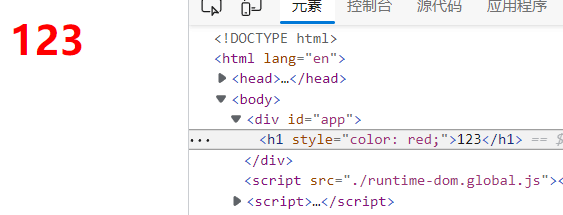
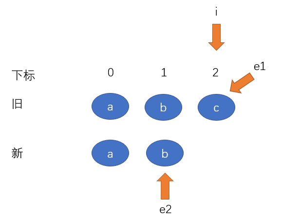
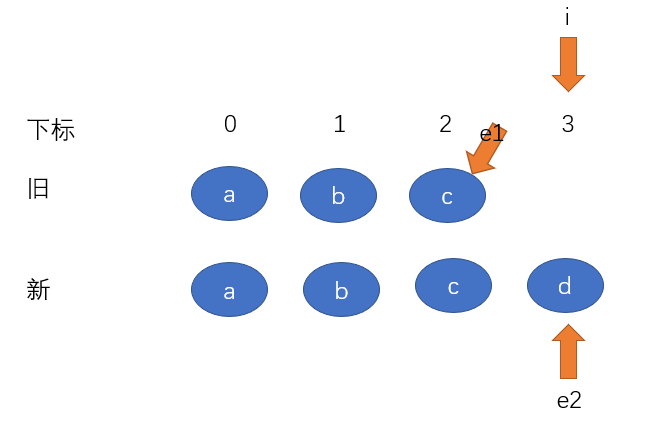
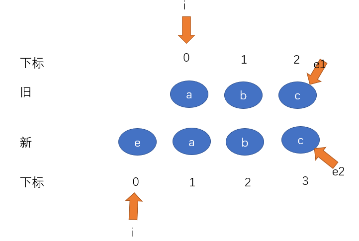
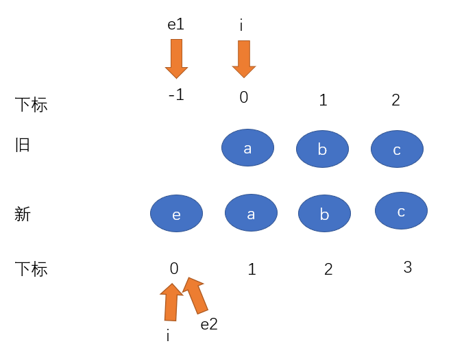
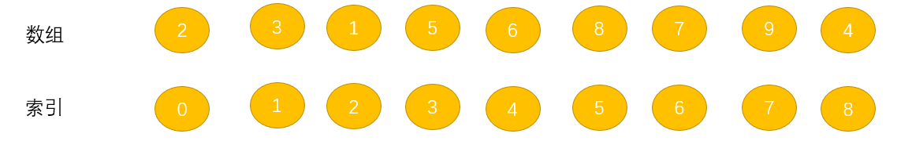
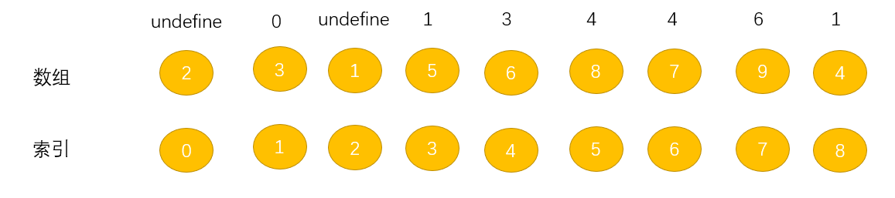

Vue3源码之虚拟DOM和diff算法
虚拟dom和diff算法
渲染dom有许多不同的模式，例如js渲染、app渲染、小程序渲染、测试渲染等
Vue中为了实现解耦，将逻辑分成了两个模块：
- 运行时（核心），不依赖于平台（浏览器、测试环境、小程序等），主要靠虚拟DOM来实现
- 针对不同平台的运行时，例如vue是针对浏览器平台的
Vue2中将这两部分都放在了一起，所以对于不同平台的改动较大
Vue3使用渲染器来实现，给渲染器传入不同的功能来实现渲染，使用示例如下：
1 | /** |
runtime-dom
runtime-dom就是针对浏览器平台的渲染，定义对dom及其属性的一系列操作
定义DOM的一系列操作
1 | //node节点的一系列操作 |
定义DOM属性的操作API
1 | /** |
patchClass
1 | export function patchClass(el, nextValue) { |
patchStyle
1 | export function patchStyle(el, prevValue, nextValue={}) { |
patchEvent
1 | function createInvoker(callback) { |
patchAttr
1 | export function patchAttr(el, key, nextValue) { |
整合dom操作和dom属性操作
将dom操作和dom属性操作整合为渲染方法
1 | import { nodeOps } from './nodeOps' |
runtime-core
runtime-core模块就是模板渲染的核心，它不受平台的限制。
h函数和createVnode函数
h函数和createVnode函数配合用于创建虚拟节点
- h函数接收一系列参数，并对其进行判断属于h函数的哪一种用法，然后交由createVnode函数创建虚拟节点
- 也就是说，h函数来判断逻辑，createVnode函数只管创建虚拟节点就可以了
h函数
1 | /** |
createVnode函数
值得学习的是，Vue3还使用了位运算形式的标识来标识节点的类型
1 | //形状判断，使用位运算优化性能 |
createVnode函数
1 | export function isVnode(value) { |
元素的初始化渲染
阅读顺序: 从最下面的render函数开始
1 | export function createRenderer(renderOptions) { |
测试
1 | <div id="app"></div> |

解决传入文本节点的问题以及卸载节点
有时候我们就只是想将文本插入到容器中，不需要其他标签包裹，这个时候就可以给h函数的第一个参数传一个标识Text
1 | render(h(Text, 'hello'), app) |
1 | //定义Text标识 |
修改patch函数
添加判断要渲染的是元素节点还是文本节点
1 | //处理文本节点 |
修改渲染子节点的函数
1 | //将文本包装成文本节点 |
卸载节点
在render函数中传入null，代表要卸载节点
1 | render(h(Text, '123'), app) |
修改render函数
1 | const unmount = (vnode) => { |
比较节点
相同虚拟节点的判断：标签名（type）相同 且 key相同
1 | //判断两个虚拟节点是否是相同节点：1.标签名相同(type) 2.key相同 |
比较节点思路：
- 判断新旧节点是不是相同的虚拟节点。不然不是相同的，删除旧的渲染新的
- 是相同虚拟节点，并且都是文本节点。复用旧节点，将文本内容更新
- 是相同虚拟节点，并且都是元素节点。复用旧节点，对比新旧节点属性并更新，对比新旧节点的子节点
不是相同虚拟节点： 不是相同虚拟节点，卸载旧节点，并将旧节点对应的n1设置为null，这样在新节点的渲染中相当于是初次渲染
1 | //对比新旧虚拟节点 |
processText函数
1 | //处理文本节点 |
processElement函数
1 | const processElement = (n1, n2, container, anchor) => { |
patchElement函数
1 | const patchElement = (n1, n2) => { |
patchProps函数
1 | //属性比较函数 |
简单的孩子比较
孩子节点的比较情况：
— | — | —
新孩子 | 旧孩子 | 操作方法
文本 | 数组 | 删除旧孩子，设置新孩子
文本 | 文本/空 | 更新文本
数组 | 数组 | diff算法
数组 | 文本/空 | 清空文本，挂载新孩子
空 | 数组/文本 | 清除旧孩子
patchChildren函数进行孩子的比较
1 | const patchChildren = (n1, n2, el) => { |
unmountChildren函数
1 | const unmountChildren = (children) => { |
mountChildren函数
1 | const mountChildren = (children, container) => { |
diff算法处理特殊情况
先对一下特殊情况进行处理，例如新增节点、删除节点等。这样可以优化diff算法
在patchChildren中调用patchKeyedChildren函数对新旧孩子都是数组的情况进行处理
1 | const patchChildren = (n1, n2, el) => { |
patchKeyedChildren
- 定义三个指针，i指向两个孩子的开头，e1、e2分别指向旧孩子和新孩子的最后一项
- 循环一：试着从新旧孩子的第一项开始对比，如果是相同虚拟节点就调用patch函数进行更新，当前比较的两个节点不是相同节点，或者e1、e2任何一方遍历完毕就跳出循环
- 循环二：试着从新旧孩子的最后一项开始对比，如果如果是相同虚拟节点就调用patch函数进行更新，当前比较的两个节点不是相同节点，或者e1、e2任何一方遍历完毕就跳出循环
- i比e1大说明有新增，i到e2之间就是新增部分；i比e2大说明有删除，i到e1之间就是删除部分
代码实现
1 | const patchKeyedChildren = (c1, c2, el) => { |
示例一：

首先，i=0指向新旧孩子的第一项，e1指向旧孩子最后一项，所以e1=2，同理e2=1
对比新旧孩子第一项，是相同节点，i后移。对比新旧孩子第二项，是相同节点，i后移，i=2。
此时(i=2) > e2,所以循环结束，同时无法进入循环二。i > e2说明有删除项，将i到e1间的项删除
示例二：

首先，i=0、、e1=2、e2=3
分别对比新旧孩子第一、二、三项，都是相同节点，i后移至下标为3处
此时i > e1表示有新增项，将i到e2之间的项新增
示例三：
初始示意图

先走循环一，发现e1[0] != e2[0]，不是相同节点，退出循环一
走循环二，从新旧孩子最后一项对比
对比新旧孩子的最后一个节点，发现是相同节点，e1、e2指针前移
分别对比key为b和key为a的项，是相同节点，e1、e2指针前移

此时旧节点遍历完，跳出循环，e1=-1、、e2=0、i=0，i大于e1，说明有新增，将i到e2之间的项新增
实现乱序比对

上图中 key为a 和 key为g 的项会被开始的两个循环处理，此时i=1, e1=e2=5，同时因为i小于e1、e2，所以不会新增或删除中间各项。
接下来要对中间各项进行乱序比对：
- 首先定义一个Map集合，将新孩子中要乱序对比的项按照key和索引（i）的形式存起来
- 循环旧孩子，在新孩子的Map中查找每项。如果存在，则先patch，如果旧孩子中有新孩子没有，就删除旧孩子中的这项
- 同时记录新孩子map中被patch中的项，那么新孩子map中没被patch过的就要被新增
1 | const patchKeyedChildren = (c1, c2, el) => { |
diff优化之最长递增子序列
在上图的乱序对比中，我们可以发现，key为c和d的两项在新旧节点中的排列顺序并没有改变，我们将他们两看成一项，那么只需要将e从他们的后面挪到前面就可以了。减少了插入的次数，优化了diff
在上面的newIndexToOldIndex数组中就记录了新孩子中节点在旧孩子中的下标，上例中新孩子e、c、d、h所组成的newIndexToOldIndex数组值就为[3,1,2,0]。
可以发现，数组中递增的1,2就正好对应c,d。为了方便，我们对newIndexToOldIndex数组进行处理来找到最长递增子序列
例如：2, 3, 1, 5, 6, 8, 7, 9, 4中的最长递增子序列就是2, 3, 5 ,6 ,7, 9。
算法实现
要查找到最长递增子序列的思路：
- 默认数组的第一项为最小，将下一项与这项进行对比，如果前一项小于后一项，就将后一项加入到这个子序列中；如果后一项小于前一项，那么用后一项在已有序列中进行二分查找，替换掉比他大一点的项。
- 在替换过程中可能会出现错误替换，使子序列不是最长的，所以还要进行回溯
解决这个最长子序列问题主要用到：贪心算法、二分查找，回溯
示例：如图是一个newIndexToOldIndex数组，现在找出它的最长递增子序列

过程：
- 首先默认2是最小的，将2添加到子序列中，并且记录子序列中前一项的索引，此时2是第一个，所以此时记录的**索引为
[undefined],此时子序列为[2]**， - 下一项3 大于 2，所以将3加入都子序列中，记录子序列中前一项索引
0。此时索引数组为[undefined, 0],记录子序列中此时子序列为[2, 3] - 下一项1 小于 3，在已有子序列中查找有没有比他大一点的，找到2，所以将1替换掉2，1在子序列中没有前一项，所以索引为
undefined。此时索引数组为[undefined, 0, undefined],记录子序列中此时子序列为[1, 3] - 下三项5、6、8，按前面的逻辑他们都是比当前子序列中最后一项大，将他们添加进去。此时索引数组为
[undefined, 0, undefined, 1, 3, 4],记录子序列中此时子序列为[1, 3, 5, 6, 8] - 下一项7，小于子序列中的最后一项，所以经二分查找后它替换此时子序列中最后一项，并记录替换掉的项（8）的前一项的索引。此时索引数组为
[undefined, 0, undefined, 1, 3, 4, 4],记录子序列中此时子序列为[1, 3, 5, 6, 7] - 下一项9，大于子序列最后一项，加入到子序列中。此时索引数组为
[undefined, 0, undefined, 1, 3, 4, 4, 6],记录子序列中此时子序列为[1, 3, 5, 6, 7, 9] - 下一项4，小于子序列中最后一项，经二分查找后替换掉5，并记录它（5）的前一项的索引。此时索引数组为
[undefined, 0, undefined, 1, 3, 4, 4, 6, 1],记录子序列中此时子序列为[1, 3, 4, 6, 7, 9]
显然[1, 3, 4, 6, 7, 9]是不正确的，在原数组newIndexToOldIndex中1没有出现在3的前面
这个时候我们记录的索引数组就可以用来回溯了。

可以肯定的是，子序列中最后一项肯定是正确的，所以我们从最后一项开始回溯
- 9记录的前一项是下标为6的7
- 7记录的是下标为4的6
- 6记录的是下标为3的5
- 5记录的是下标为1的3
- 3记录的是下标为0的2
- 2记录的下标是undefined，结束回溯
所以经过回溯之后，确定最长递增子序列为2, 3, 5 ,6 ,7, 9
代码实现
1 | function getSequence(arr) { |
使用优化
1 | let increment = getSequence(newIndexToOldIndex) //得到最长递增子序列 |
runtime-core完整代码
h函数
1 | import { isArray, isObject } from "@vue/shared" |
createVnode函数
1 | import { isArray, isString, ShapeFlags } from "@vue/shared"; |
render函数
1 | import { isString, ShapeFlags } from "@vue/shared" |